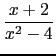
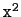
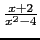
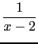

suivant: Comment sélectionner
monter: L'éditeur d'équation
précédent: L'éditeur d'équation
Table des matières
Index
Supposons que l'on veuille entrer l'expression
, on peut le faire de plusieurs façons :
- dans une ligne de commande à condition de mettre des parenthèses et
on tape : (x+2)/(x
^2-4)
- on se sert d'un éditeur d'équation, éditeur obtenu avec
Alt+e.
On clique dans l'écran de l'éditeur d'équation et on tape x+2, puis
on sélectionne x+2 (avec la souris ou avec la flèche vers le haut
du bloc des flèches de direction) puis on tape sur / et x,
on sélectionne x (avec la souris ou avec la flèche vers le haut)
puis on tape ^2 puis on sélectionne  et on tape
-4 et on valide avec enter et on obtient
comme réponse.
Supposons que l'on veuille simplifier l'expression
on peut le faire de plusieurs façons :
- dans une ligne de commande à condition de mettre des parenthèses et
on tape : normal((x+2)/(x
^2-4+1)),
- on se sert d'un éditeur d'équation, éditeur obtenu avec
Alt+e.
On tape la fraction
 (voir ci-dessus) puis, on
sélectionne toute la fraction (avec la flèche vers le haut) et on
sélectionne la fonction normal du menu
Math
 Réecriture ce qui a pour effet d'avoir :
Réecriture ce qui a pour effet d'avoir :
normal(
) dans l'éditeur d'équation,
puis soit on valide avec enter et on obtient
 comme réponse, soit on appuie sur le bouton
eval du clavier (si le clavier est présent), soit on sélectionne
Evaluer selection dans le petit M (à l'intersection des deux
barres de scroll), pour avoir la réponse dans l'éditeur d'équation.
suivant: Comment sélectionner
monter: L'éditeur d'équation
précédent: L'éditeur d'équation
Table des matières
Index
Documentation de giac écrite par Renée De Graeve